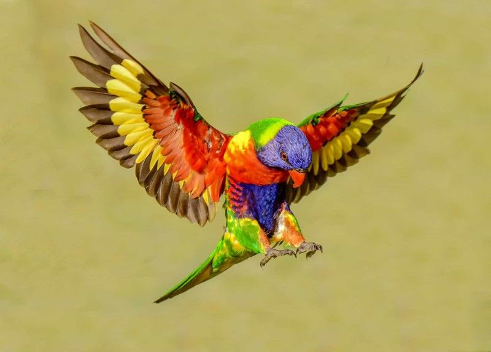

Lớp chim cư trú ở các hệ sinh thái khắp toàn cầu, từ vùng Bắc Cực cho tới châu Nam Cực. Các loài chim có kích thước dao động khác nhau, từ nhỏ cỡ 5 cm (như Mellisuga helenae - một loài chim ruồi) cho tới lớn cỡ 2,7 m (như đà điểu).
Các bằng chứng hóa thạch cho thấy, chim được tiến hóa từ các loài khủng long chân thú (Theropoda) trong suốt kỷ Jura, vào khoảng 150-200 triệu năm về trước, với đại diện đầu tiên được biết đến, xuất hiện từ cuối kỷ Jura là Archaeopteryx (vào khoảng 155–150 triệu năm trước). Hầu hết các nhà cổ sinh vật học đều coi chim là nhánh duy nhất của khủng long còn sống sót qua sự kiện tuyệt chủng kỷ Creta-Paleogen vào xấp xỉ 65,5 triệu năm trước.
